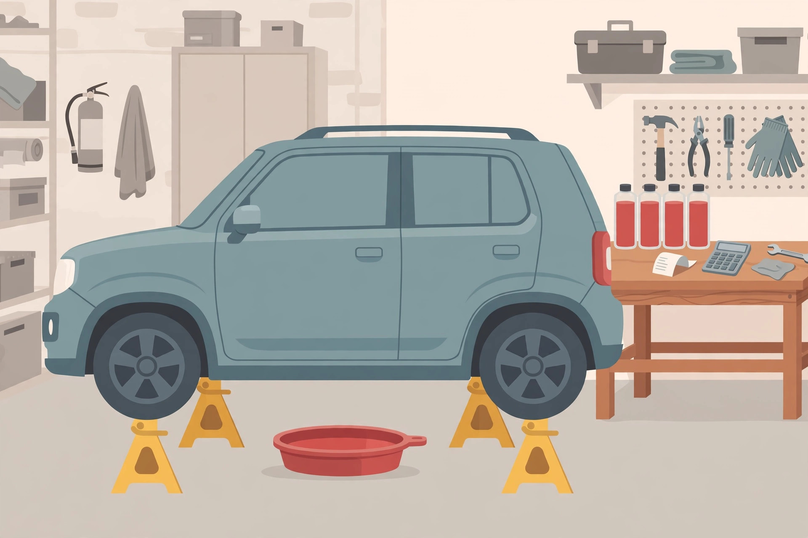

2012 RAV4 transmission service costs in Canada: DIY vs shop breakdown

Start with the honest problem. No source retrieved for this guide prices a 2012 RAV4 transmission fluid service in Canada. Every figure below is American, in US dollars, and it is labelled that way every time it appears, because a Canadian reader who budgets from an unlabelled US number has been misled by the formatting, not by the math. What this article can do, and what the priced pages do not, is show you the scope question that makes any quote comparable, the US benchmarks as a scale check, and the itemised list a Canadian quote should carry before you judge it.
The scope question that makes two quotes comparable
A drain and fill replaces only about 30 to 50 percent of the total fluid. The rest stays in the torque converter and the cooler circuit, which is why several drain and fill services, spaced over time, approximate a full exchange. Hold that fact next to any price and the cheap quote problem appears. One shop quoting a single drain and fill and another quoting a multi service exchange are selling different amounts of new fluid and different amounts of labour, and their prices should differ. Comparing them as if both were the same service is how the cheaper quote wins the phone call and loses the comparison. Before price, ask every shop the same three questions: how many drains does this price include, how much fluid goes in, and is the level set hot afterwards, as the step by step drain and fill guide requires?
Shop prices: the US benchmarks, labelled as such
| Service, as priced by the source | Published figure | Source and date checked |
|---|---|---|
| Transmission fluid change, 2012 RAV4, estimator range | US$261 to US$324 | RepairPal, checked 2026-10-25 |
| Shop drain and fill, owner reported range | US$200 to US$300 | Owner forum pricing, checked 2026-10-25 |
| Dealer fluid change, dealer pages in the research | Under US$150 | US dealer pages, checked 2026-10-25 |
| Full transmission replacement, context only | Over US$3,500 | US dealer page, checked 2026-10-25 |
Read that table as a scale, not a quote. The spread between the dealer figure and the estimator range is the scope question showing up in prices: services that look identical in a headline differ in what they include. The replacement line is there for one reason only, to size the maintenance decision. A fluid service priced in the low hundreds sits next to a failure priced in the thousands, and that ratio, not any single figure, is the argument for servicing on schedule, as the interval guide sets out.
DIY: fluid, tools, and the three drain reality
The DIY parts figure in the research is roughly US$50 to US$150, described as including quality ATF, a new drain plug gasket, and basic tools. Owner data for this vehicle puts one drain and fill at about 3.8 quarts, using WS specification fluid. Those two numbers together produce the honest DIY math that single drain comparisons hide:
| Plan | Fluid bought | What it achieves |
|---|---|---|
| One drain and fill | About 3.8 quarts | Replaces roughly 30 to 50 percent of the fluid |
| Three drain and fills over time | About 11.4 quarts in total, in three purchases | Approximates a full exchange, per the multi service description in the research |
So the DIY total cost of ownership comparison is not one parts bill against one shop bill. It is up to three parts bills, three sessions under the vehicle, three hot level checks, and three lots of used fluid to recycle, against a shop price that may itself cover only the first drain. Price both plans at the same scope, three for three or one for one, and the DIY route still usually wins on cash while losing on time and on the level check risk that the step by step guide spends most of its pages managing. That trade is the decision, stated plainly, and different owners will land on different sides of it for good reasons.
What a Canadian quote should itemise
- The service scope in words: drain and fill, pan drop, or fluid exchange, and how many drains the price includes.
- The fluid: WS specification, the quantity in litres or quarts, and whether the quantity matches the roughly 3.8 quart per drain figure for this vehicle.
- Parts: a new drain plug gasket at minimum, and any strainer or pan work listed separately, not bundled invisibly.
- Labour as its own line, so a low total cannot hide an omitted level check.
- The hot level check after the service, named on the quote. A service without it is unfinished on this transmission.
- Taxes and shop supplies as their own lines, in Canadian dollars, on a Canadian quote. If a shop quotes from a US price book, that fact should be on the page.
What success looks like: two Canadian quotes, side by side, with the same scope, the same fluid quantity, and the level check named on both. Only then is the cheaper one actually cheaper.
When the cheap quote is the expensive one
Three patterns, all visible before you pay. A quote far below the US benchmark range, converted loosely, is probably a single drain priced against your assumption of a full service. A quote with no fluid quantity cannot be checked against the 3.8 quart reality of this vehicle. And a quote with no level check is pricing an incomplete job, on a transmission where the level is set hot and the DIY guide treats that check as the step the whole service turns on. The expensive version of this service is not the higher itemised quote. It is the cheap, vague one, followed by a second service to do the parts the first one skipped.
— Owen Park, Automotive Writer